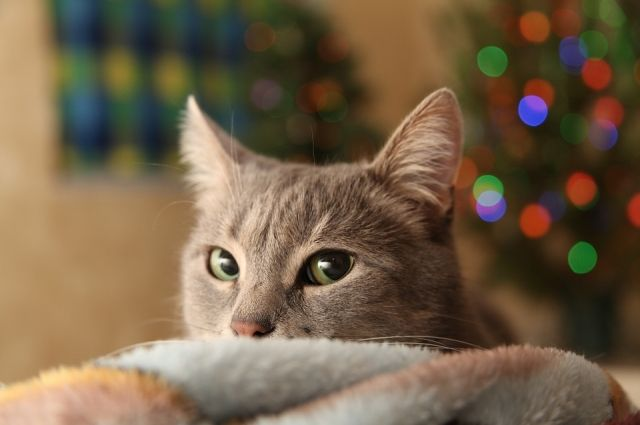
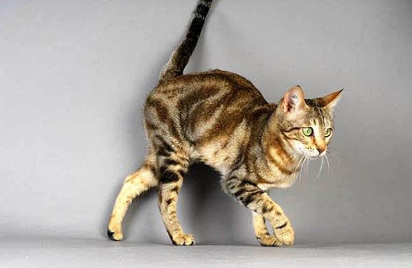

Умница красавица и просто молодец
Возраст: 1 годик
Порода: усатый тигр
Болезни: здоров
Статус: постигает дзен
Любит поорать, особенно ночью

Дедушка Ленин улыбается смотря на этого кота
Возраст: 5 лет
Порода: полосатая
Болезни: нет
Статус: мурчит
У него длинный хвост и он прикольный

Розовый носик, но отнюдь не холодный
Возраст: 6 месяцев
Порода: не кошачий
Болезни: носик не холодный
Статус: думает, что он котенок
Забавный хрюн, жаль что не кот

Вечно спит в кровати
Возраст: 2 годика
Порода: кроватная
Болезни: повышенная сонливость
Статус: независимый
Обожает спать, просто все время спит и спит. Нет такой поры, когда он не спит. Спит. СПИТ.

Любит есть грибы (????)
Возраст: 5 лет
Порода: пушистая морская
Болезни: грустные глаза
Статус: ищет пушистого хозяина
Его хозяева думали, что он гриб и назвали его Рыжик

Иногда сливается вместе с бетонным полом, за что иногда засасывается в пылесос
Возраст: 5 месяцев
Порода: воодушевляющая
Болезни: отсутствуют
Статус: нужен новый лак для шерсти
Прыгает и носится как тигр из Винни-пуха
Не имеет ничего общего с Чернышевским, даже цвет
Возраст: 3 годика
Порода: революционная
Болезни: длинные когти слишком
Статус: невидимый в темной комнате
Кот из эрмитажа, носит историческую фамилию

Огуречный огурец
Возраст: 1 годик
Порода: красивая
Болезни: огурец.
Статус: играющий
Огуречный огурец с огурцовым огуречником

It is from England
Возраст: 2 years
Порода: english
Болезни: no
Статус: drinking tea
На самом деле он не из Великобритании, а из Египта, но никто не знает об этом

Сын кошки
Возраст: 1 годик
Порода: кошачий
Болезни: здоров
Статус: независимый
Тут тоже что-то описывается, но сюда уже точно никто не долистает